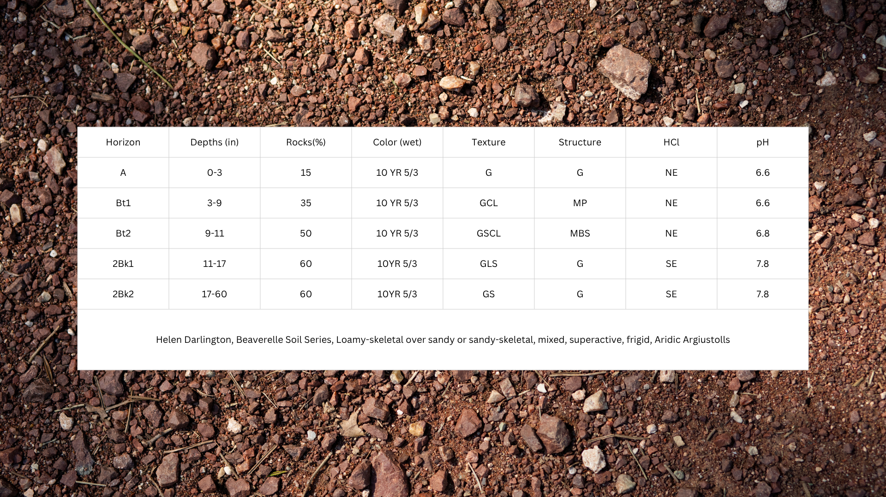

Soil series profile
Beaverelle Series
Loamy-skeletal over sandy or sandy-skeletal, mixed, superactive, frigid, Aridic Argiustolls.

Horizon observations
| Horizon | Depth (in) | Rocks (%) | Wet color | Texture | Structure | HCl | pH |
|---|---|---|---|---|---|---|---|
| A | 0–3 | 15 | 10 YR 5/3 | G | G | NE | 6.6 |
| Bt1 | 3–9 | 35 | 10 YR 5/3 | GCL | MP | NE | 6.6 |
| Bt2 | 9–11 | 50 | 10 YR 5/3 | GSCL | MBS | NE | 6.8 |
| 2Bk1 | 11–17 | 60 | 10 YR 5/3 | GLS | G | SE | 7.8 |
| 2Bk2 | 17–60 | 60 | 10 YR 5/3 | GS | G | SE | 7.8 |
Project grading rubric

DRoCTS+ Grading Rubric
Grading rubric for the Beaverelle soil profile.